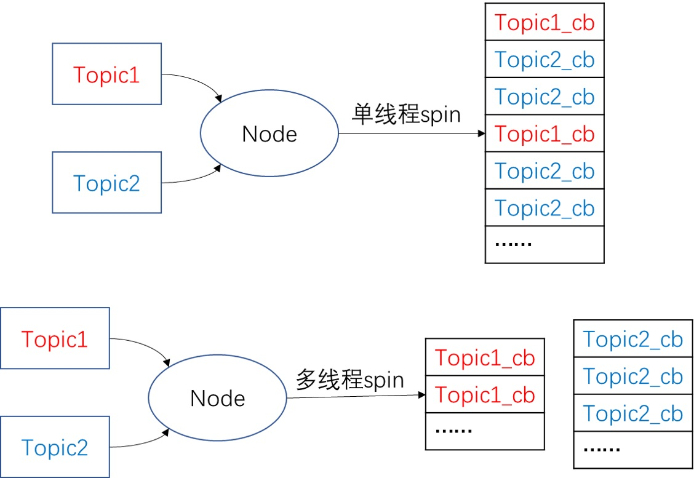

topic in roscpp
以topic_demo为例，自定义一个gps类型的消息（包括x, y, state），一个节点以一定频率模拟发布gps信息，另一个节点进行消息接收并计算出当前位置与原点(0, 0)的欧氏距离
1. 创建消息
新建topic_demo/msg/gps.msg文件
float32 x # x坐标
float32 y # y坐标
string state # 工作状态
- 程序中对消息的操作方法类似于对结构体的操作。
2. 创建节点
2.1. 消息发布节点
topic_demo/src/talker.cpp文件
#include <ros/ros.h>
#include <topic_demo/gps.h>
int main(int argc, char **argv)
{
//用于解析ROS参数，第三个参数为本节点名
ros::init(argc, argv, "talker");
//实例化句柄，初始化node
ros::NodeHandle nh;
//自定义gps msg
topic_demo::gps msg;
msg.x = 1.0;
msg.y = 1.0;
msg.state = "working";
//创建publisher
ros::Publisher pub = nh.advertise<topic_demo::gps>("gps_info", 1);
//定义发布的频率
ros::Rate loop_rate(1.0);
//循环发布msg
while (ros::ok())
{
//以指数增长，每隔1秒更新一次
msg.x *= 1.03;
msg.y *= 1.01;
ROS_INFO("Talker: GPS: x = %f, y = %f ", msg.x ,msg.y);
//以1Hz的频率发布msg
pub.publish(msg);
//根据前面定义的频率, sleep 1s
loop_rate.sleep();//根据前面的定义的loop_rate,设置1s的暂停
}
return 0;
}
- 节点句柄的
advertise函数是模板函数，因此在创建ros::Publisher对象时需要指定消息类型为topic_demo::gps，指定pub的发布主题为gps_info，发送队列大小为1 topic_demo::gps这个消息的命名空间为topic_demo的原因是CMakeLists.txt中定义的项目名是topic_demo
2.2. 消息接收节点
2.2.1. topic_demo/src/listener.cpp文件
#include <ros/ros.h>
#include <topic_demo/gps.h>
#include <std_msgs/Float32.h>
void gpsCallback(const topic_demo::gps::ConstPtr &msg)
{
//计算离原点(0,0)的距离
std_msgs::Float32 distance;
distance.data = sqrt(pow(msg->x,2)+pow(msg->y,2));
//float distance = sqrt(pow(msg->x,2)+pow(msg->y,2));
ROS_INFO("Listener: Distance to origin = %f, state: %s",distance.data,msg->state.c_str());
}
int main(int argc, char **argv)
{
ros::init(argc, argv, "listener");
ros::NodeHandle n;
ros::Subscriber sub = n.subscribe("gps_info", 1, gpsCallback);
//ros::spin()用于调用所有可触发的回调函数。将进入循环，不会返回，类似于在循环里反复调用ros::spinOnce()。
ros::spin();
return 0;
}
- 在新建
ros::Subscriber对象的时候需要指定主题名、接收队列大小、回调函数的函数指针，这里的gpsCallback函数是回调函数的函数指针，只有sub收到消息的时候才会调用该函数。 - 具体去触发回调函数的命令就是
ros::spin()，它会反复的查看有没有消息来，如果有就会让回调函数去处理。若只指定了callback函数，而不进行ros::spin()或者ros::spinOnce()最终也回调函数不会生效
2.2.2. 消息队列处理
Subscriber接收到消息，实际上是先把消息放到一个队列中去。队列的长度在Subscriber构建的时候设置好了。当有spin函数执行，就会去处理消息队列中队首的消息。
| spin方法 | 阻塞/非阻塞 | 单线程/多线程 |
|---|---|---|
ros::spin() |
阻塞 | 单线程 |
ros::spinOnce() |
非阻塞 | 单线程 |
ros::MultiThreadedSpin() |
阻塞 | 多线程 |
ros::AsyncMultiThreadedSpin() |
非阻塞 | 多线程 |
阻塞类的spin函数执行的时候相当于程序进入了一个死循环，一直检查是否有新的消息入队，消息的处理通过回调函数来执行，因此正常情况下在阻塞类的spin函数之后的代码不会执行。
单线程与多线程的消息处理示意图如下

3. 项目结构文件
3.1. topic_demo/CMakeLists.txt文件
cmake_minimum_required(VERSION 2.8.3)
project(topic_demo)
find_package(catkin REQUIRED COMPONENTS
roscpp
std_msgs
message_generation
)
add_message_files(FILES
gps.msg
)
generate_messages(DEPENDENCIES
std_msgs
)
add_executable(talker src/talker.cpp) #生成可执行文件talker
# add_dependencies(talker topic_demo_generate_messages_cpp)
add_dependencies(talker ${${PROJECT_NAME}_EXPORTED_TARGETS} ${catkin_EXPORTED_TARGETS})
# 表明在编译talker前，必须先生编译完成自定义消息
# 必须添加add_dependencies，否则找不到自定义的msg产生的头文件
# 表明在编译talker前，必须先生编译完成自定义消息
target_link_libraries(talker ${catkin_LIBRARIES}) #链接
add_executable(listener src/listener.cpp ) #声称可执行文件listener
add_dependencies(listener ${${PROJECT_NAME}_EXPORTED_TARGETS} ${catkin_EXPORTED_TARGETS})
target_link_libraries(listener ${catkin_LIBRARIES})#链接
- ROS的消息的格式即
msg文件是ROS自行定义的，并不是Cpp的标准，因此需要依赖message_generation功能包来将gps.msg文件“编译”成符合Cpp标准的形式的结构体、头文件等 - 消息中用到的
float32和string并不是Cpp的标准格式，而是ROS系统提供的格式，因此需要依赖std_msgs包 generate_messages()是用来生成msg的，如果没有这行，在源程序中会找不到gps.h，也就是没有生成消息结构体
参考ROS 机器人技术 - 解析 CMakeList.txt 文件
3.2. topic_demo/package.xml文件
<package format = "2">
<name> topic_demo </name>
<version> 0.1.0 </version>
<description>
This package topic_demo
</description>
<maintainer email="user@example.com">someone</maintainer>
<license> mit </license>
<buildtool_depend> catkin </buildtool_depend>
<depend> roscpp </depend>
<depend> std_msgs </depend>
<build_depend> message_generation </build_depend>
<exec_depend> message_runtime </exec_depend>
</package>
- 在编译的时候需要用到
message_generation依赖 - 在节点运行的时候需要用到
message_runtime依赖，提供消息运行时需要的依赖 - xml文件的必填项参考package.xml